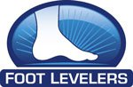

"Fourways Chiropractic For the Whole Family"
Foot Levelers Spinal Pelvic Stabilizers are custom-made orthotics for your feet that are inserted into shoes and built into sandals to help improve your spinal health.
Foot Levelers is a company started by chiropractor, Dr. Monte Greenawalt, that has been manufacturing custom-made orthotics called Spinal Pelvic Stabilizers for 55 years.
Your feet are the foundation for your entire body. Like any structure, your body’s foundation must be balanced to support the weight above it. If the arches in one or both of your feet collapse, your body doesn'’t get the correct postural support, causing an imbalance in your skeletal frame. The Associate™ Platinum digital scanner is the latest tool helping chiropractors develop care plans and use postural support, like custom-made orthotics from Foot Levelers, to obtain positive results in nearly everyone — from children to seniors.
As can be seen in the adjacent picture, the body is a biomechanical kinetic chain. If there are abnormal movements at one line, or joint, these can interfere with proper movements at other joints.
This means that excessive pronation of the foot or feet can have an effect further up the kinematic chain even all the way into your spine.
Pronation describes the rotation of a body part downward or inward. Foot Pronation is actually a normal motion that occurs when walking; however, if it happens excessively, pronation can cause global postural problems. The major cause of over-pronation is a decrease in the arch height.
The foot is formed of three distinct arches, which create an architectural vault. The result of supporting these three arches is improved stability and postural integrity.
Properly fitted Spinal Pelvic Stabilizers support the feet to control excessive and unwanted pronation and supination. This helps to reduce unwanted stress on the body.
Improved shock absorption reduces repetitive stress on joints and muscles, permitting smoother function and decreasing arthritic symptoms. Use of Spinal Pelvic Stabilizers represents a long-term, yet cost-effective intervention for many types of functional and structural problems.
Foot Levelers Spinal Pelvic Stabilizer orthotics look at supporting the foot through the three phases of the gait cycle: heel strike, mid-stance, and toe-off. They vary according to your activity level and what your chiropractor feels would be best for you. You will be able to see the full product range by clicking on Spinal Pelvic Stabilizers.
To see how the well supported your feet are a digital scan using the Foot Levelers Associate™ Platinum can be done of the feet within a minute. Foot Levelers Associate™ Platinum helps the doctor of chiropractic to screen for imbalances that contribute to problems in any number of places, like your knees, hips, and low back — even if your feet don’t hurt!
From the digital foot scan any areas of abnormal pressure can be seen which could show an imbalanced distribution of weight between the feet indicating a fatigue of one of the three arches in the foot.
We know how the feet are the foundation of the entire spinal pelvic structure. So any fallen arch or misalignment in the feet can cause pain (now or later) in the knees, hips, back or neck and even cause them to wear out prematurely. Many lower back issues are actually the result of feet that are poorly supported, and we can fix that!
Doctors of Chiropractic around the world are looking to give their patients the best short-term and long-term results for the spinal health and are recommending Foot Levelers Spinal Pelvic Stabilizers to achieve that.
Other Health Products: